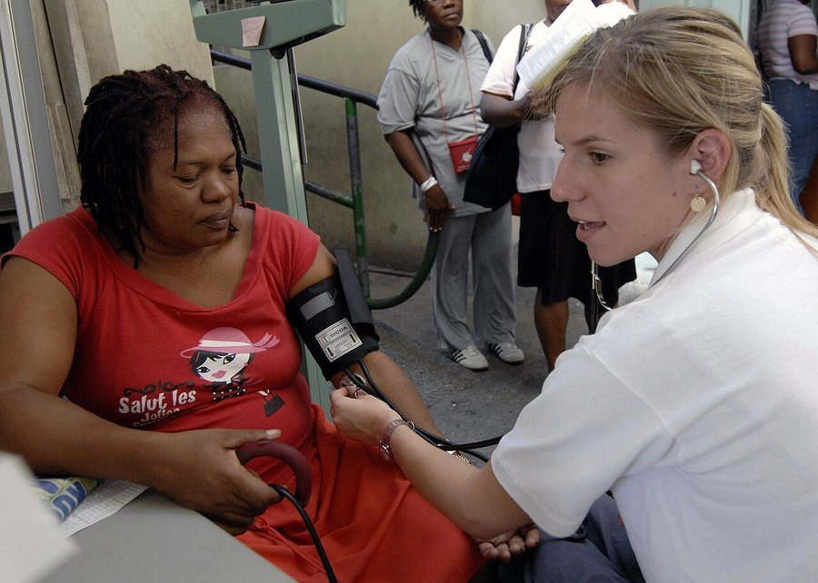

Horse Boost Side Effects: Interactions, Cautions and Who Should Skip It
The doses in this gummy are small, which keeps the risk low for most healthy men. The exceptions are specific, and they're worth knowing before the first bottle arrives.

Key takeaways
- Most healthy men are unlikely to notice side effects. The whole active blend is 82 mg, and caffeine is only 5 mg.
- Medication interactions are the real concern. Nitrates, ED drugs and blood pressure medicines deserve a doctor's opinion first.
- Some herbs carry their own cautions. Ashwagandha (thyroid, liver, pregnancy) and green tea extract (liver, at high doses) are the main ones.
- The FDA has found hidden prescription drugs in many male enhancement products. A full printed label and realistic claims are basic checks.
- The gummy itself has 3 g of added sugar and a little sorbitol, which matters for diabetes and sensitive stomachs.
Horse Boost side effects are likely to be mild or absent for most healthy men, because the 82 mg blend holds small amounts and only 5 mg of caffeine. The real cautions are interactions: L-arginine and horny goat weed with nitrates, ED drugs and blood pressure medicine, plus herb-specific warnings for ashwagandha and green tea extract.
This page goes through each risk in order of how much it matters. It also covers something people searching "horseboost side effects" often haven't heard: the FDA's long list of male enhancement supplements found to contain hidden prescription drugs, and what a printed label can and can't tell you. For an overview of the product, see our Horse Boost review.

HorseBoost: check today's price
A once-daily strawberry men's vitality gummy with maca, muira puama, tribulus and horny goat weed. Sold only on the official site, with a 60-day money-back guarantee.
See the official price →Does Horse Boost have side effects?
Every supplement can, and the honest answer for this one is that serious problems seem unlikely at the labeled dose. One gummy a day contains an 82 mg proprietary blend of muira puama, maca, catuaba, green tea, caffeine, ashwagandha, L-arginine, tribulus and horny goat weed. That's a small total amount of active material.
Supplement labels list blend ingredients by weight, heaviest first. Caffeine, listed fifth, is 5 mg, which suggests the four ingredients after it are 5 mg or less each. Smaller amounts generally mean fewer side effects. They don't mean zero risk, because some people react to tiny amounts, and interactions can depend on what else you take.

The label itself says to consult a doctor before use if you're pregnant or nursing, take medication or have a medical condition, and to stop use and consult a doctor if any adverse reaction occurs. That's standard wording, but it's the right starting point.
How much caffeine is in Horse Boost?
Five milligrams per gummy, printed on the label. Green tea extract may add a little more, which isn't quantified.
| Source | Typical caffeine |
|---|---|
| One HorseBoost gummy | 5 mg (plus a little from green tea extract) |
| 8 oz brewed coffee | About 80 to 100 mg |
| 8 oz green tea | About 30 to 50 mg |
| 12 oz cola | About 30 to 40 mg |
| FDA's general daily limit for healthy adults | 400 mg |
For nearly everyone, 5 mg is negligible. Still, count it if you're very caffeine-sensitive, have an irregular heartbeat, have anxiety that caffeine worsens, or take a medicine that slows caffeine breakdown (some antibiotics and the antidepressant fluvoxamine do). Taking it in the morning removes any chance of it touching your sleep.
Where caffeine adds up is stacking. A man who drinks four coffees, an energy drink and a pre-workout powder can pass 400 mg without noticing. HorseBoost won't be what tips that balance, but it's one more line in the total, and the Vigor Boost version of this blend carries twice as much.
Can you take Horse Boost with blood pressure medicine, nitrates or ED drugs?
Ask your doctor first. This is the most important caution on the page.
L-arginine is the building block of nitric oxide, which relaxes blood vessels. At gram doses, it can lower blood pressure. Nitrates (such as nitroglycerin for chest pain) and prescription ED drugs (sildenafil, tadalafil and similar) also lower blood pressure through the nitric oxide pathway. Combined, the effects can add up and cause dizziness or fainting. MedlinePlus also advises against L-arginine after a heart attack.
Horny goat weed's main compound, icariin, acts on the same enzyme as ED drugs in lab studies. The effect is weak and untested in people, but it points the same direction.
Now, the proportion. HorseBoost likely contains 5 mg or less of L-arginine, while blood-pressure effects in studies used thousands of milligrams. The real-world risk from this gummy is probably small. We still say ask first, for two reasons. The blend doesn't print the exact amount, and anyone taking nitrates or several blood pressure drugs has very little margin for surprises.
Never take any male enhancement product to replace or adjust a prescription, and don't stop a medicine because you've started a supplement.
Which herbs in HorseBoost need caution?
Here's what's known about each botanical, drawn from NIH and MedlinePlus summaries and the published trials. Many traditional herbs have simply never been studied for long-term safety, which isn't the same as being proven safe.
| Ingredient | Known cautions | Who should ask a doctor |
|---|---|---|
| Ashwagandha | Stomach upset, drowsiness; rare liver injury reports; may affect thyroid hormone levels | Thyroid disease, liver disease, autoimmune disease, sedative users, pregnancy |
| Green tea extract | Rare liver injury with concentrated extracts, mostly at high doses | Liver disease |
| Maca | Generally well tolerated as a food; theoretical thyroid concern at very high intake | Thyroid disease |
| Tribulus | Stomach upset in trials; little long-term data | Diabetes or kidney disease |
| Horny goat weed | Limited human safety data; acts on blood-vessel enzymes in lab studies | Heart disease, blood pressure or ED drug users |
| L-arginine | May lower blood pressure at gram doses | BP drugs, nitrates, ED drugs, after a heart attack |
| Muira puama, catuaba | Very little safety data in people | Anyone with a chronic condition |
Ashwagandha deserves a closer word, since it has the most detailed safety record. NIH's complementary health center notes that short-term use at studied doses is usually well tolerated, with stomach upset and drowsiness as the common complaints. It also notes rare reports of liver injury, a possible effect on thyroid hormone tests, and advises against use in pregnancy. At 5 mg or less per gummy, HorseBoost is far below those studied doses, but the cautions about thyroid and liver disease are sensible to respect.
The same proportion argument applies to green tea extract. Liver problems linked to it have mostly involved concentrated weight-loss products taken at several hundred milligrams of catechins a day, often on an empty stomach. A share of an 82 mg blend is a different situation.
For the background on what each herb does, see our Horse Boost ingredients guide, and for the stress research on one of them, our ashwagandha article.
What about the sugar and sorbitol in the gummy?
The gummy base is the one part of HorseBoost with known amounts, so it's the most predictable source of effects.
- Sugar: 3 g of added sugar per gummy (6% of the daily value), from corn syrup and cane sugar. That's less than a teaspoon. It's still worth counting if you have diabetes or follow a strict low-carb plan.
- Sorbitol: a sugar alcohol that keeps the gummy soft. Large amounts cause gas and loose stools. One gummy carries far less than the amounts that usually cause trouble.
- Teeth: sticky sugary gummies cling to teeth. Taking it with a meal or rinsing afterward helps.
- Allergens: the label doesn't carry an allergen statement. If you have food allergies, ask the seller about the facility.
Keep the bottle away from children. A strawberry gummy looks like candy, and the label warns to keep it out of reach.
Why does the FDA warn about male enhancement supplements?
Because this category has a long record of hidden drugs. The FDA's tainted sexual enhancement products list includes hundreds of supplements that lab testing found to contain undeclared sildenafil, tadalafil or chemical cousins of them, sometimes at more than a prescription dose. Many were sold online or at gas stations and convenience stores, often as single pills promising results within minutes.
The danger is real. A man taking nitrates for heart disease who unknowingly swallows a hidden ED drug can see his blood pressure fall to a life-threatening level. Others get the side effects of the drug (headache, flushing, vision changes) without knowing why.
Warning signs the FDA and pharmacists point to include promises of instant results, claims that a product works "like" or "better than" a prescription drug, single-dose packets sold at checkout counters, and labels in a foreign language or with missing ingredients.
Part of the problem is how supplements are regulated. The FDA doesn't review or approve them before they go on sale. It acts after the fact, through inspections, warning letters, recalls and public notices. Products on the tainted list are often renamed and sold again, so a product not appearing on it isn't proof of anything. It's one check among several.
Why does a printed label matter, and what can't it prove?
HorseBoost has a full Supplement Facts panel, a named US distributor with a phone number, an ordinary gummy base and modest structure-function claims. It doesn't promise effects within minutes or compare itself with prescription drugs. Those are the features of a product trying to stay inside the rules.
A label can't prove what's in the bottle, though. Only lab testing can. We haven't tested HorseBoost, and the order page doesn't publish third-party lab results. We have no reason to think it contains anything undeclared, and we're also not in a position to guarantee it doesn't. That's true of most supplements sold online.
Practical steps help close the gap. Buy from the official site rather than marketplace resellers, check that the seal under the cap is intact (the label tells you not to use it otherwise), and be suspicious of any product that seems to work like a drug. Supplements built from these herbs at these doses shouldn't.
Who should not take Horse Boost?
Skip it, or get a doctor's approval first, if any of these apply to you:
- You take nitrates, a prescription ED medicine or blood pressure drugs.
- You've had a heart attack, have heart disease or have an irregular heartbeat.
- You have thyroid disease, liver disease or an autoimmune condition.
- You take sedatives, thyroid hormone, diabetes medicine or immune-suppressing drugs.
- You're scheduled for surgery in the next two weeks.
- You're under 18, or you're a woman who is pregnant or nursing.
- You have new or ongoing erection problems that no doctor has looked at yet.
That last one isn't a side effect, but it may be the most important line on the list. Erection problems can be an early sign of heart disease, diabetes or low testosterone, and a supplement can delay the diagnosis. Our article on whether Horse Boost works explains what a doctor will check.
If none of these apply and you decide to try it, start sensibly. Take one gummy in the morning with food for the first week and notice how you feel. Don't stack it with other men's vitality products or pre-workout powders, which often carry the same herbs and much more caffeine. And keep a simple note of the start date, which helps both a doctor and a refund request if you need either.
What should you do if you have a reaction?
Stop taking it. Most mild reactions to supplements, like an upset stomach or a headache, fade within a day or two after stopping.
Get medical help right away for chest pain, fainting, a racing or irregular heartbeat, trouble breathing, swelling of the face or throat, yellowing skin or eyes, or dark urine. Bring the bottle so the doctor can see the label.
You can report a problem with any supplement to the FDA through its MedWatch program, online or by phone. Reports help the agency spot patterns. If you bought through the official site and want your money back, the 60-day guarantee applies; check the refund steps on the order page.
So, is Horse Boost safe?
For a healthy man not taking interacting medicines, HorseBoost looks low-risk at one gummy a day. The small doses limit both the potential benefit and the potential harm. The people who need caution are clearly identifiable: anyone on nitrates, ED drugs or blood pressure medication, people with thyroid, liver or heart conditions, and anyone using the gummy in place of a medical checkup. Vigor Boost shares the same blend, so the same cautions apply to it, with twice the caffeine. More in our men's health section.
HorseBoost: check today's price
A once-daily strawberry men's vitality gummy with maca, muira puama, tribulus and horny goat weed. Sold only on the official site, with a 60-day money-back guarantee.
See the official price →Frequently asked questions
Can Horse Boost raise blood pressure?
It isn't expected to. The 5 mg of caffeine is too small to raise blood pressure in most people, and L-arginine tends to lower it rather than raise it. If you have hypertension, check with your doctor and monitor your readings.
Can Horse Boost cause headaches?
Headaches aren't a known effect at these doses, though anyone can react to a new product. A headache with flushing or vision changes after any male enhancement product is a reason to stop and seek advice, since those are typical of hidden ED drugs.
Is Horse Boost safe with alcohol?
There's no known interaction at the labeled dose. Alcohol itself dampens sexual function and energy, so heavy drinking will work against anything the gummy might do.
Will Horse Boost show up on a drug test?
None of the listed ingredients is a substance screened in standard workplace drug tests. Athletes in tested sports should be careful with any multi-ingredient supplement, since contamination isn't something a label can rule out.
Can I take Horse Boost with a multivitamin?
Yes, there's no overlap. HorseBoost contains no vitamins or minerals beyond 4 mg of sodium.
Does Horse Boost affect sleep?
Five milligrams of caffeine is unlikely to keep anyone awake. Taking it in the morning removes the question entirely for very sensitive people.
Is Horse Boost safe for older men?
Age alone isn't the issue. Older men are more likely to take blood pressure drugs, nitrates or several medicines at once, which is why a doctor's review matters more for them.
Cleared it with your doctor?
HorseBoost prints its full ingredient list and offers a 60-day money-back guarantee on official orders. Check today's price on the official page.
See HorseBoost's official price →Related: Horse Boost review 2026 · Horse Boost ingredients explained · Does Horse Boost work? · Caffeine and memory